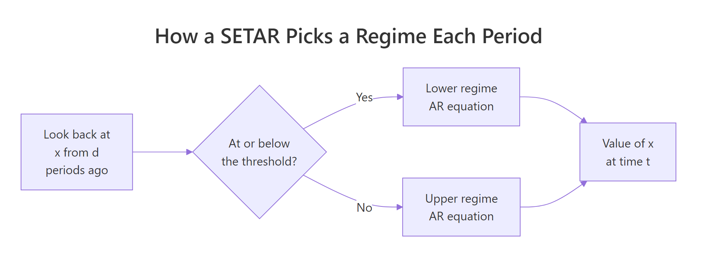
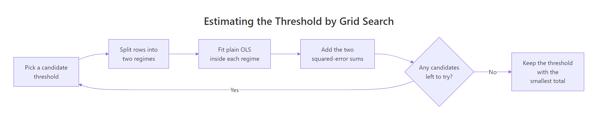
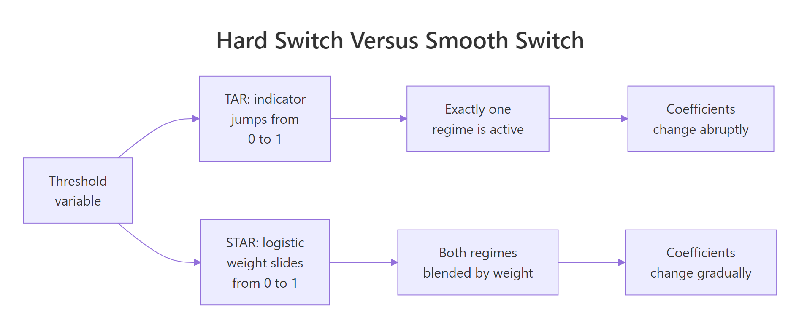
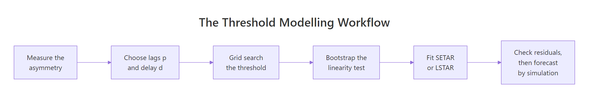

TAR and STAR Models in R: Threshold Autoregression
A threshold autoregressive (TAR) model lets a time series obey one equation while it sits below some cut-off value and a completely different equation once it climbs above, flipping between them the moment a past value of the series crosses that line. A smooth transition (STAR) model keeps the same idea but replaces the hard flip with a dial that slides gradually from one equation to the other. This post builds both from scratch in base R, one runnable block at a time: you will write the estimator, the significance test, and the forecaster yourself before you ever call a package.
Why do linear AR models miss what threshold models catch?
Start with a series that linear models have never fitted well. R ships with lynx, the number of Canadian lynx trapped each year from 1821 to 1934. Populations like this rise gently as prey becomes abundant and then crash hard when food runs out. If that description is right, the ups and the downs of the series should not look alike. Let's measure that directly.
We take logarithms first, which is standard for count data because it turns proportional changes into equal-sized steps. Then diff() gives the year-on-year change, and we split those changes into risings and fallings.
Read the four numbers as a pair of stories. The series rose in 70 of the 113 transitions and fell in only 43, so it spends more years going up than coming down. But each fall is much bigger: the average drop of 0.372 is roughly half again the average climb of 0.244.
That is the signature of an asymmetric cycle. Many small steps up, then a few violent steps down. Here is what it looks like.
The peaks are sharp and the troughs are broad and flat, like a row of shark fins rather than a row of sine waves. The series travels over two orders of magnitude, from about 39 animals to about 6,900.
Now here is the problem. A standard autoregressive model predicts today from a weighted sum of recent values, with one fixed set of weights that never changes. Let's fit an AR(2) to the lynx data, then generate a long artificial series from that fitted model and measure its asymmetry with the exact code we used above.
Walk through what just happened. ar() estimated the two weights, 1.378 on last year and -0.740 on the year before, which together produce an oscillation. arima.sim() then rolled that fitted rule forward for 20,000 years to give us a huge sample of what the model believes lynx populations look like. Finally we measured rises and falls in the artificial data.
The simulated average rise is 0.285 and the average fall is -0.282. They are the same size to two decimal places. The model produces a series whose ups and downs are mirror images, while the real data climbs by 0.244 and crashes by 0.372.
That is precisely what a threshold model does.
Try it: Sunspot counts have the same reputation for rising slowly and falling fast. Measure the asymmetry in the annual sunspot series using the same recipe. The block below uses the raw counts, which are badly skewed. Change sunspot.year to sqrt(sunspot.year), the standard variance-stabilising transform for this series, and run it again.
Click to reveal solution
Explanation: On the square-root scale the average rise is 1.712 and the average fall is 1.201, so sunspot activity climbs about 43 percent faster than it decays. The asymmetry runs the opposite way to the lynx: sunspots shoot up and drift down, while lynx drift up and crash down. Both patterns are invisible to a linear model.
What exactly is a TAR model, and what does the delay do?
A threshold autoregressive model is two ordinary AR models plus a rule for choosing between them. Written out for two regimes and one lag, it says:
$$x_t = \begin{cases} \phi_{1,0} + \phi_{1,1}x_{t-1} + \varepsilon_t & \text{if } z_t \le r \\[4pt] \phi_{2,0} + \phi_{2,1}x_{t-1} + \varepsilon_t & \text{if } z_t > r \end{cases}$$
Where:
- $x_t$ is the value of the series at time $t$, the thing we are predicting
- $r$ is the threshold, the cut-off that separates the two regimes
- $z_t$ is the threshold variable, the quantity we compare against $r$
- $\phi_{1,\cdot}$ are the coefficients used in the lower regime, $\phi_{2,\cdot}$ those used in the upper regime
- $\varepsilon_t$ is the usual random shock
Everything hangs on what you use for $z_t$. When the threshold variable is a past value of the series itself, so $z_t = x_{t-d}$, the model is called self-exciting, giving the name SETAR. The series decides its own regime. That is the version used in almost all practice and the version we build here.
The number $d$ in $x_{t-d}$ is the delay parameter. It answers "how far back does the series look when deciding which rule to apply today?" With $d = 1$ the model checks last period; with $d = 2$ it checks two periods ago.

Figure 1: A SETAR looks back d periods, compares that value with the threshold, and applies the matching AR equation.
The fastest way to understand a model is to be the model. The loop below generates data one period at a time, checking the previous value against a threshold of zero and applying whichever equation matches. The lower regime has a coefficient of 0.90, which is close to 1, so the series climbs slowly and persistently. The upper regime has a coefficient of 0.40 and a constant of -1.20, which pulls the series back down sharply.
Follow the first three values by hand. We start at y[1] = 0, which satisfies y[1] <= 0, so period 2 uses the lower rule and lands at 1.444 after a lucky shock. Now 1.444 is above zero, so period 3 uses the upper rule: -1.20 + 0.40 * 1.444 is about -0.62, and the shock pushes it to -1.221. One period above the line was enough to trigger the crash.
Because the two rules pull in opposite directions, the series cannot settle anywhere. It drifts upward until it crosses zero. Then it gets knocked straight back down, and the whole pattern starts over. Let's see how the time splits between the two rules.
The series spends 467 periods in the lower regime and only 132 in the upper, a 78-to-22 split. That imbalance is the point: crossing the threshold is a rare, brief event that is quickly undone. The second line confirms the mechanism, since the average value following an upper-regime period is -0.980, far below the average of -0.422 following a lower-regime period. Being above the line predicts a fall.
Now let's look at the series with each point coloured by the regime that produced it.
The blue points sit in the slow upward drifts and the red points cluster at the tops, immediately before each fall. That is the same shark-fin shape we saw in the lynx data, produced here by nothing more exotic than an if statement.
Now for the delay. Our simulation used y[t - 1], so $d = 1$. Had we used y[t - 2] the regime classification would differ, and the difference is not small.
The table cross-tabulates the regime each rule assigns. The diagonal cells (4 and 338) are periods where both delays agree; the off-diagonal cells are where they disagree, and there are 128 + 128 = 256 of them out of 598 periods. The two delays disagree 43 percent of the time.
That matters because the delay is not something you can eyeball. It has to be estimated alongside the threshold, which is exactly what we do next.
Try it: The split between regimes depends on where you put the threshold. Recount the regimes using a threshold of 0.5 instead of 0. Do you expect the upper regime to gain or lose observations?
Click to reveal solution
Explanation: Raising the threshold to 0.5 moves the line upward, so observations that used to count as "upper" now fall below it. The upper regime shrinks from 132 to 45 and the lower grows from 467 to 554. Push the threshold high enough and the upper regime runs out of data entirely, which is why the search procedure in the next section has to refuse extreme candidates.
How do you estimate the threshold from the data?
Here is the difficulty. If someone hands you the threshold, fitting is trivial: split the rows into two groups and run ordinary least squares in each. But nobody hands you the threshold. It has to come out of the data, and it appears inside an if statement rather than as a coefficient you can differentiate.
The way around this is the observation that makes the whole field practical. Hold the threshold fixed and the model is completely linear. So we can try every plausible threshold, fit the cheap linear model for each one, and keep whichever gives the smallest total error. That procedure is called conditional least squares.

Figure 2: Conditional least squares scores every candidate threshold and keeps the one with the smallest total squared error.
To build it we first need the data in a shape regression understands: one row per time point, with the response in one column and the lagged predictors beside it. Base R's embed() does this. Given a series and a window width k, it returns a matrix whose first column is $x_t$, second column $x_{t-1}$, and so on.
The function returns three pieces: the response y, the predictor matrix X with a column of ones for the intercept, and the threshold variable z. We lose the first k - 1 observations because they have no complete history, which is why 600 values became 599 rows.
Look at the printed rows to confirm the alignment. In row 2 the response is -1.221, the lagged predictor is 1.444, and the threshold variable is also 1.444. With p = 1 and d = 1 the lag and the threshold variable are the same column, which is the usual setup. When d differs from 1 they separate.
Now the scoring function. For a candidate threshold it splits the rows in two, then runs a regression inside each half and adds up the resulting errors. We use .lm.fit() rather than lm() because it skips all the formula parsing and summary machinery, which matters when you are about to call it thousands of times.
Read those four numbers as a scoreboard, lower being better. A single linear model leaves 270.50 of squared error. Splitting at the true threshold of zero cuts that almost in half, to 150.24. Splitting at the wrong places is much worse: -1 leaves 221.61 and 0.5 leaves 259.77, barely better than not splitting at all.
The error surface therefore has a clear minimum at the right answer. All we have to do is find it by trying everything.
The estimate is 0.000 against a true value of 0.000. The search recovered the threshold exactly.
The one unfamiliar function there is vapply(), which calls setar_ssr() once per candidate threshold and collects the answers into a numeric vector, the same as a for loop that grows a vector but faster and safer. The numeric(1) argument is just a promise that each call returns a single number.
Two design choices deserve explanation. We only test values that actually occur in the data, because the split can only change when the threshold crosses an observed point; testing values in between would be wasted work. And we trim the extremes, discarding the lowest and highest 15 percent of candidates, so that neither regime is left with too few observations to estimate.
Plotting the whole error curve shows how sharp the minimum is.
We evaluated 421 candidates, and the curve drops into a distinct V at the answer. A flat or ragged curve here would be a warning that the threshold is poorly identified.
With the threshold settled, the coefficients follow directly. The next function fits both regimes with qr.solve(), which returns the least squares coefficients for a design matrix and a response, and packages up the residuals along with an AIC.
AIC, the Akaike information criterion, is the score we will use to compare models throughout the post. It adds the model's error to a penalty of 2 per estimated parameter, so a model only wins by fitting better than the extra parameters cost. Lower is better, and negative values are perfectly normal because the error term is a logarithm.
Compare the estimates against the values we simulated from. The lower regime was built with a constant of 0.30 and a slope of 0.90; we recovered 0.298 and 0.888. The upper regime was built with -1.20 and 0.40; we recovered -1.153 and 0.440. Both regimes are close, and the regime counts match the true split exactly.
That is the whole estimator, in about thirty lines of base R. Everything from here is refinement.
Try it: Confirm that warning yourself. Rerun the search on the simulated series with a heavier trim and see whether it still finds zero.
Click to reveal solution
Explanation: With a trim of 0.30 the search sees only 241 candidates instead of 421, and the true threshold of 0 is no longer among them. It settles for -0.205, and the error rises from 150.24 to 192.56. The estimate is not merely less precise, it is looking in the wrong place, which is why a heavily trimmed search on an unbalanced series is a real hazard.
How do you fit a SETAR model to a real time series?
Our machinery is general, so we can point it straight at the lynx data. Two things still need choosing: the number of lags p and the delay d. For lynx, two lags is the classic choice, matching the AR(2) we fitted earlier. The delay we can simply scan, since there are only a couple of sensible values.
One caution before we compare. Error sums are only comparable across models fitted to the same rows. With p = 2, both d = 1 and d = 2 need three periods of history, so both use the same 112 rows and the comparison is fair.
Both delays beat the linear benchmark of 5.7826, but d = 2 is better, cutting the error to 4.3482. So the lynx population appears to decide its behaviour based on where it stood two years ago rather than last year, which is biologically reasonable given the lag between prey collapse and predator decline.
Let's fit the winner and read off the two regimes.
The estimated threshold is 3.31 on the log scale. Undo the logarithm and it becomes about 2,042 lynx, which is the number that matters to a reader who has never thought in logarithms. Roughly 78 of the 112 years sat below that line.
Now interpret the coefficients, which is where the biology appears. Both regimes have a positive first lag and a negative second lag, the standard recipe for a cycle. But the upper regime reverses far harder: its second-lag coefficient of -1.012 is more than twice the lower regime's -0.428. A large negative weight on the value from two years ago means a strong pull back down. Once the population passes 2,042 animals, the model expects a hard reversal. Below that line the pull-back is much gentler and the population is free to keep climbing.
That single asymmetry is what the linear AR(2) could not express, and it is the whole reason the threshold model fits better.
The tsDyn package implements all of this and much more, and it is the standard tool once you understand what it is doing. It needs to be installed and run in your local R session (RStudio or the R console) rather than in the browser, so this block and the other tsDyn blocks below are marked accordingly.
library(tsDyn)
mod_auto <- setar(x, m = 2, thDelay = 1) # m = lags, thDelay = 1 means x[t-2]
round(getTh(mod_auto), 3)
#> th
#> 3.31
round(coef(setar(x, m = 2, thDelay = 1, th = 3.31)), 3)
#> const.L phiL.1 phiL.2 const.H phiH.1 phiH.2 th
#> 0.603 1.262 -0.433 1.492 1.621 -1.123 3.310
round(c(setar = AIC(mod_auto), linear_ar2 = AIC(linear(x, m = 2))), 2)
#> setar linear_ar2
#> -358.37 -333.87 Watch the argument naming, because it is the most common way to reproduce a different threshold from the same data: tsDyn counts the delay from zero, so its thDelay = 1 is our d = 2. Set thDelay = 2 and you are asking for x[t-3].
With that translated, the package searches the same grid and lands on the same threshold, 3.31. Its lower-regime coefficients of 0.603, 1.262 and -0.433 sit right on top of our 0.588, 1.264 and -0.428. The upper regime differs a little more because tsDyn assigns one boundary observation differently, and with only 34 points in that regime a single row moves the constant noticeably. The conclusion is unchanged: the threshold model beats the linear one on AIC, by -358.37 to -333.87.
Try it: We assumed two lags because that is traditional for lynx. Check whether a single lag would have done. Fit the p = 1 model with the same delay and compare its error with the 4.3482 we got from p = 2.
Click to reveal solution
Explanation: With one lag the error rises from 4.3482 to 6.1656, roughly 42 percent worse. Look at why: the lower regime's slope of 1.001 is a random walk, and the upper regime's 1.453 is explosive. Neither can turn the series around, because reversing direction requires the negative second-lag term that makes the model overshoot and come back. Stripped of that, the model can only describe drift punctuated by jumps. The threshold still helps, but it is patching a badly under-specified model. Settle the lag order first, then hunt for regimes.
How do you test whether the threshold is real?
Our SETAR fits better than the linear model. That proves nothing on its own. A two-regime model has twice the coefficients plus a threshold chosen by searching hundreds of candidates for the best possible split, so it would fit better even on data with no regimes at all. We need to know whether the improvement is larger than luck can explain.
The natural statistic compares the two error sums, exactly like an F test:
$$F = n \cdot \frac{\text{SSR}_{\text{linear}} - \text{SSR}_{\text{threshold}}}{\text{SSR}_{\text{threshold}}}$$
Where $n$ is the number of rows used, $\text{SSR}_{\text{linear}}$ is the one-regime error, and $\text{SSR}_{\text{threshold}}$ is the error at the best threshold found.
Now the catch, and it is the deepest idea in this post. Under the null hypothesis of no threshold effect, the two regimes are identical, which means the threshold parameter does not exist. It has no true value, because changing it changes nothing. A parameter that vanishes under the null is called an unidentified nuisance parameter, and its presence destroys the usual distribution theory. The statistic above does not follow a chi-square or F distribution, and comparing it to those tables will make you reject far too often.
That is the bootstrap. First, the statistic itself. Because we compute the F value at every candidate threshold and keep the largest, the quantity is conventionally called the sup-F statistic, "sup" being short for supremum, the mathematician's word for the largest value a set reaches. You will see it printed as sup_F in the output below and referred to by that name in the literature.
Is 36.95 large? We cannot say yet, because we have nothing to compare it against. So we build the comparison. The function below fits a plain linear AR to the data, then repeatedly generates new series from that linear model by resampling its own residuals, and runs the full threshold search on each one. Every one of those artificial series is genuinely linear, so the statistics we collect show what the search produces when there is nothing to find.
The p-value of 0.005 is the smallest achievable with 199 replications, meaning not one artificial linear series produced a statistic as large as the real data's. Look at where the null distribution actually sits.
This is why the bootstrap was worth the trouble. On purely linear data the search still produces a typical statistic of 7.76, and one time in twenty it exceeds 15.13. The search always finds something. Our observed 36.95 is more than twice the 99th percentile of what pure noise generates, so the lynx regimes are real.
A test that only ever says "yes" is worthless, so let's check the other direction. We generate a single series from a linear AR(2) with coefficients like the lynx model's, then run the identical test on it. The honest answer here is a non-rejection.
On data we built with no threshold, the statistic is 3.91 with a p-value of 0.92. The test correctly declines to find regimes that are not there. Having seen it behave on a known-negative case, you can trust the 0.005 it returned for the lynx.
Try it: Run the test on our simulated SETAR series y, where we know for certain that two regimes exist. The statistic should be enormous.
Click to reveal solution
Explanation: The statistic is 479.5, more than ten times the lynx value, with the smallest p-value 99 replications can deliver. That is what an unambiguous threshold effect looks like when you have 600 observations and a large coefficient difference between regimes. Real data is rarely this clear, which is precisely why the bootstrap comparison matters on borderline cases.
What do STAR models fix that TAR models cannot?
The SETAR has a hard edge. At 2,041 lynx the model applies one set of coefficients; at 2,043 it applies a completely different set. Nothing in between. For some systems that is right, since a policy rule or a capacity constraint really does switch at a point. For a population of animals it is less believable, because there is no year in which every lynx simultaneously changes behaviour.
Smooth transition autoregressive models fix this by replacing the on/off indicator with a dial. Instead of asking "which regime?", they ask "how far through the transition are we?" and blend the two sets of coefficients accordingly.

Figure 3: TAR flips between regimes; STAR blends them with a logistic weight.
The dial is the logistic function, the same S-curve used in logistic regression:
$$G(z_t; \gamma, r) = \frac{1}{1 + e^{-\gamma (z_t - r)}}$$
Where $r$ is the location where the dial reads exactly one half, and $\gamma$ controls the steepness. The full model, with the weight $G$ mixing the two regimes, is:
$$x_t = \left(\phi_{1,0} + \phi_{1,1}x_{t-1}\right)\left(1 - G\right) + \left(\phi_{2,0} + \phi_{2,1}x_{t-1}\right)G + \varepsilon_t$$
When $G$ is 0 the first set of coefficients applies alone; when $G$ is 1 the second set does; in between you get a genuine mixture. Because $G$ is logistic, this is called a logistic STAR, or LSTAR.
We do not have to code that formula ourselves. R ships the logistic function as plogis(), where plogis(u) returns exactly $1/(1 + e^{-u})$, so all we supply is the argument $\gamma(z_t - r)$.
The whole behaviour of the model is governed by $\gamma$. Let's watch it directly, evaluating the dial at five values around a location of 3.31 for three different steepness settings.
Read the table row by row. With $\gamma = 2$ the dial barely moves, going from 0.265 to 0.727 across the whole range, so both regimes are always substantially active and the model is nearly linear. With $\gamma = 10$ the transition is decisive but still gradual. With $\gamma = 200$ the dial reads 0 or 1 everywhere except exactly at the location, which is an indicator function in all but name.
That last row is the key relationship between the two model families. Here is the curve.
The blue line is a gentle ramp, the green a recognisable S, and the red is indistinguishable from a step. At $z = 3.6$ the three dials read 0.64, 0.95 and 1.00 respectively.
Let's prove the claim numerically rather than just asserting it. We fit the smooth model at increasing steepness and watch its error converge on the hard model's.
One line inside the function below needs explaining first, because it is the trick that keeps the fitting linear. Rather than running two separate regressions, we hand least squares the predictor matrix twice: once as it is, and once with every column multiplied by the weight g. That is what cbind(m$X, m$X * g) builds. The first block of coefficients then describes the model when the dial reads 0, and the second block describes how much each coefficient changes by the time the dial reaches 1. Both blocks are estimated in a single ordinary least squares call.
At $\gamma = 500$ the smooth model's error is 4.4217, matching the hard SETAR's 4.4217 to four decimal places. A SETAR is an LSTAR with an infinitely steep dial. They are not rival theories but two points on one continuum, and the middle of that continuum is where the interesting models live: $\gamma = 5$ gives 4.3547, better than either extreme.
Notice the / sd(m$z) inside the function. Without it, $\gamma$ would mean something different for every series, since a steepness of 10 is drastic for a series ranging over 2 units and negligible for one ranging over 2,000. Dividing by the standard deviation of the threshold variable makes $\gamma$ comparable across problems.
Try it: Compute the transition weight by hand for a series whose threshold variable is much larger in scale, and see why the standardisation matters. The block uses an unstandardised gamma of 10 on values in the thousands.
Click to reveal solution
Explanation: Unstandardised, a gamma of 10 applied to differences of hundreds saturates the logistic completely, giving 0 and 1 with nothing in between, so the model silently becomes a hard threshold no matter what gamma you chose. After dividing by the spread of 500 the same gamma produces a usable S-curve reading 0.119 and 0.881 on either side. The standardisation is what keeps gamma interpretable.
How do you fit an LSTAR model in R?
The estimation strategy is the one from the SETAR section, promoted to two dimensions. Fix both $\gamma$ and the location $r$, and the model becomes linear in its remaining coefficients, so ordinary least squares finishes the job. We therefore lay a grid over the pair and score every combination.
The inner regression is the stacked one we already built, so the only new work is laying out the grid and scoring it. expand.grid() forms every gamma-location pair, and mapply() runs lstar_ssr() on each pair in turn.
We searched 30 steepness values spaced evenly on a log scale (because gamma matters multiplicatively) crossed with 30 candidate locations drawn from the quantiles of the threshold variable. The winner has $\gamma = 7.34$ and a location of 3.3267, remarkably close to the SETAR's threshold of 3.31.
A gamma of 7.34 is a genuine middle value, neither the near-linear flatness of 2 nor the effective step of 200. The lynx data prefers a transition that takes a couple of years to complete.
Now extract the coefficients.
The low row gives the coefficients that apply when the dial reads 0, and the change row gives how much each coefficient shifts by the time the dial reaches 1. Adding them gives the far end of the transition.
The story matches the SETAR exactly. The second-lag coefficient moves from -0.374 at the bottom to -0.710 at the top, so the higher the population, the harder the model pulls it back. The LSTAR simply says this intensification happens over a range of population sizes rather than at one magic number.
So which model wins? Compare all three on the same data.
Here is an honest result that most tutorials skip. The LSTAR does fit slightly better in raw error, 4.3391 against 4.3482. But it spends an extra parameter to get there, and AIC therefore ranks it below the SETAR, -348.09 against -349.86. Both beat the linear model at -323.93 by a wide margin.
For the lynx, the smooth transition buys nothing. The hard switch is the better description. That is a real finding, not a failure of the LSTAR, and you should expect it whenever the transition genuinely is abrupt.
set.seed(12)
ml <- lstar(x, m = 2, thDelay = 1, trace = FALSE)
round(coef(ml), 4)
#> const.L phiL.1 phiL.2 const.H phiH.1 phiH.2 gamma th
#> 0.4891 1.2465 -0.3664 -1.0241 0.4233 -0.2546 11.1538 3.3392
round(c(linear = AIC(linear(x, m = 2)), setar = AIC(setar(x, m = 2, thDelay = 1)),
lstar = AIC(ml)), 2)
#> linear setar lstar
#> -333.87 -358.37 -356.65 tsDyn uses a proper optimiser rather than a coarse grid, so it refines gamma to 11.15 and the location to 3.3392. Its lower-regime coefficients of 0.4891, 1.2465 and -0.3664 match our 0.509, 1.245 and -0.374 closely. Most importantly it reaches the same verdict independently: SETAR at -358.37 beats LSTAR at -356.65.
Try it: Force the smooth model to behave like a hard one by fixing gamma very high, then compare its error with the freely fitted 4.3391.
Click to reveal solution
Explanation: Forcing the dial to a step gives 4.4217, exactly the hard SETAR error we computed earlier at the same location. The freely fitted smooth model reached 4.3391, so 0.083 is the entire contribution smoothness makes on this data. Set against the extra parameter it costs, that gap does not pay for itself, which is what the AIC comparison already told us.
How do you forecast with a threshold model?
Forecasting one step ahead is easy and looks just like the linear case: check which regime the current threshold value puts you in, then apply that regime's equation. The helper below does exactly that, taking the recent history most-recent-first.
The last two observations are 3.531 and 3.424. With d = 2 the model looks at hist[2], which is 3.424, and compares it against the threshold of 3.31. Since 3.424 sits above the line, the upper regime applies. That produces a forecast for 1935 of 3.349 on the log scale, which is about 2,231 lynx once you undo the logarithm.
Multi-step forecasting is where nonlinear models stop resembling linear ones, and where it is easy to get quietly wrong answers. The tempting approach is to feed each forecast back in as if it were data, producing a chain of predictions. That is called the skeleton, and for a linear model it is exactly right.
For a nonlinear model it is not. The reason is that the average of a nonlinear function is not the function of the average. Your point forecast for two steps ahead sits at some value, but the actual distribution of possible values two steps ahead straddles the threshold, so some of those futures switch regime and some do not. The skeleton ignores that entirely by committing to one regime.
The correct approach is to simulate many futures with random shocks and average them. Let's build both and compare.
At one step the two agree to three decimals, 3.349 against 3.350, because at horizon one there is no uncertainty about the regime yet. From step three they part company, and by step nine the skeleton says 3.392 while the simulation says 3.166.
The largest gap is 0.374 on the log scale, which back-transforms to a factor of about 2.4 in lynx numbers. That is not a rounding difference, it is one forecast predicting more than double the other. The skeleton produces a cleaner-looking cycle because a single deterministic path crosses the threshold at the same point every cycle. The simulated paths cross at different times, so averaging them flattens the cycle, and that flatter average is the correct expected value.
Simulation also hands you prediction intervals for free, since you already have thousands of complete futures.
The columns shown are horizons 1, 3, 6 and 12. At one step the 10-to-90 band spans 3.078 to 3.589, about half a log unit. By horizon 12 it runs from 2.127 to 3.639, three times wider. Note that these intervals are not symmetric around the median, which is another thing a linear model cannot produce and a direct consequence of futures splitting between regimes.
Try it: See how the gap between the two methods grows with the horizon. Run the block once as written to get the 12-step gap, then extend it and watch the number move.
Click to reveal solution
Explanation: Stretching the horizon to 30 steps widens the maximum gap to 0.503, up from the 0.367 the same block reports at 12 steps. (That 0.367 is slightly below the 0.374 we measured earlier only because this block simulates 1,000 paths from a different seed rather than 2,000; the gap itself is the same phenomenon.) On the raw count scale that is a factor of about three between the two forecasts. The skeleton keeps oscillating with undiminished amplitude because it deterministically retraces one cycle forever, while the simulated average damps toward the long-run mean as individual paths drift out of step with one another. The longer the horizon, the more misleading the plug-in forecast becomes.
A Complete Example: Modelling the Sunspot Cycle
Let's run the entire workflow start to finish on a series we have not touched: annual sunspot counts from 1700 onward. This section reuses only the functions we wrote above, in the order you would use them on a new problem.
We work on the square-root scale, the standard transform for sunspot data, because raw counts have variance that grows with the level.
289 annual observations, rising on average by 1.712 and falling by 1.201. The asymmetry runs the opposite way to the lynx: sunspots erupt quickly and decay slowly. A threshold model is worth trying.
A delay of 2 wins again. Now fit it and, critically, check the residuals before believing anything.
The model beats the linear benchmark, and the two regimes look different. But the Ljung-Box test on the residuals returns a p-value of 0.0002. That test asks whether any predictable pattern is left in the errors, and a p-value that small says yes, plenty. This model is not adequate, regardless of how good its error sum looks.
The problem is the lag order, not the regimes. The sunspot cycle runs about eleven years, so two lags cannot possibly capture its shape. Let's give the model enough lags to see a full cycle.
With nine lags the Ljung-Box p-value rises to 0.9468. The residuals now look like noise, which means the model has extracted the structure it was supposed to. The threshold sits at 3.376 on the square-root scale, which is about 11.4 sunspots, a strikingly low number that separates quiet years from active ones.
Only 55 of 280 usable years fall in the quiet regime, so most of the time the sun is in its active state. The two regimes behave very differently: the quiet regime has strongly alternating coefficients (1.450, then -1.052, then 0.679) which describes a sharp turnaround, while the active regime's coefficients decay smoothly. In plain terms, the model says a quiet sun snaps back to activity, whereas an active sun winds down gradually.
AIC confirms the threshold model at 6.68 against 43.84 for the linear equivalent. Finally, the formal test.
A statistic of 63.41 with a p-value of 0.005 means no simulated linear series came close. The sunspot series has genuine regimes, and we have a model whose residuals are clean.
Practice Exercises
Exercise 1: How much data does threshold estimation need?
Threshold estimates are often described as noisy. Test it. Using the simulated series y (whose true threshold is 0 and whose true coefficients are 0.30 and 0.90 in the lower regime, -1.20 and 0.40 in the upper), fit the model on the first 100 observations, then on the first 200, then on all 600. Report the estimated threshold and both regimes' coefficients each time. Which is estimated more reliably, the threshold or the coefficients?
Click to reveal solution
Explanation: The threshold is pinned at exactly 0.000 even with 100 observations, while the coefficients wander considerably: the upper regime's slope reads 0.21 at n=100 against a truth of 0.40, and only settles near 0.44 by n=600. That ordering surprises most people, but it follows from the geometry. The threshold is found by minimising a step function that drops sharply at the right value, so a modest amount of data locates it; the coefficients are ordinary regression estimates and converge at the usual slow rate. The minority upper regime suffers most, because 100 total observations give it only about 20 rows.
Exercise 2: Does the threshold model actually forecast better?
In-sample fit is not forecasting. Build a rolling one-step-ahead comparison on the lynx data: train on the first 80 observations, forecast observation 81, then retrain on 81 and forecast 82, continuing to the end. Do this for both a linear AR(2) and a SETAR with p = 2, d = 2, refitting the threshold at every step. Report the RMSE of each and the percentage improvement.
Click to reveal solution
Explanation: Over 34 genuine out-of-sample forecasts the SETAR cuts RMSE from 0.2294 to 0.2136, an improvement of 6.9 percent. That is real but far smaller than the in-sample error reduction of 25 percent suggested, which is the usual story: some of the in-sample gain was the threshold search fitting noise. A 7 percent one-step improvement is still worth having, and the gap would widen at longer horizons where the regime structure matters more.
Exercise 3: Would a third regime help?
Nothing restricts a threshold model to two regimes. Extend the search to two thresholds, splitting the lynx data into low, middle and high regimes, by writing a scoring function that fits three OLS regressions and searching over all ordered pairs of candidates. Compare the resulting error and AIC against the two-regime model. Remember that a three-regime model has 11 parameters (three regimes of three, plus two thresholds) versus 7 for the two-regime version.
Click to reveal solution
Explanation: The three-regime model finds thresholds at 2.61 and 3.31 and reduces the error from 4.3482 to 4.0838, a 6 percent improvement. Yet its AIC of -348.88 is worse than the two-regime model's -349.86, because four extra parameters bought only a small gain. Note that the upper threshold of 3.3101 is essentially the two-regime answer, so the extra split is carving up the lower regime rather than finding something new. More regimes will always fit better in sample; the question is always whether they pay for themselves.
Frequently Asked Questions
What is the difference between TAR and SETAR?
TAR is the general family, in which the variable that decides the regime can be anything, including a different series entirely. SETAR is the special case where that variable is a lagged value of the series being modelled, which is why it is called self-exciting. Almost every applied paper uses a SETAR, and most software defaults to it. If you want a genuine TAR with an external threshold variable, tsDyn's setar() accepts a thVar argument for exactly that.
How do I choose the lag order p and the delay d?
Choose p first, using the same tools you would use for a linear AR model, since a threshold model cannot fix an under-specified lag structure. The sunspot example above shows what happens if you skip this: the model looked fine until the residual test exposed it. Once p is settled, scan d over a small range, typically 1 to p, and pick the value with the lowest error, taking care that all candidate delays use the same number of rows so the comparison is fair. tsDyn's selectSETAR() automates the joint search.
How many regimes should I use?
Two, unless you have a strong reason and a lot of data. Exercise 3 shows the typical outcome: a third regime improves in-sample fit and loses on AIC. Each extra regime costs a full set of coefficients plus a threshold, and it takes the smallest regime's observation count with it. Three-regime models do appear in the literature, mostly for series with a genuine neutral band in the middle, such as prices inside a transaction-cost corridor.
Why can't I just use a standard F test for the threshold?
Because under the null hypothesis of no regimes, the threshold parameter has no meaning at all. Any value describes the data equally well, so the parameter is unidentified, and the usual asymptotic theory that produces chi-square and F distributions does not apply. On top of that, we report the maximum statistic over hundreds of candidate splits rather than a single pre-chosen one. The bootstrap in this post handles both problems by generating the distribution of that maximum on data known to be linear. Hansen's papers, listed in the references, are the definitive treatment.
Is a threshold model the same as a Markov-switching model?
No, and the difference is about what triggers the switch. In a threshold model the regime is a deterministic function of something you can observe, so at any moment you know exactly which regime you are in. In a Markov-switching model the regime is hidden and moves according to its own random transition probabilities, so you can only estimate the probability of being in each state. Choose a threshold model when you can name the trigger, such as a price level or a policy rate. Choose Markov switching when regimes are driven by something unobserved.
What about moving-average terms, as in a threshold ARMA?
Threshold ARMA (TARMA) models add regime-dependent MA terms and are a real research area, but they are much harder to estimate. The convenient property this whole post relies on, that fixing the threshold leaves an ordinary least squares problem, disappears once MA terms are present, because MA estimation is already nonlinear. In practice most applied work uses a pure threshold autoregression with enough lags to approximate whatever MA structure exists, which is what we did with nine lags for sunspots.
Do these models work on non-stationary series?
Fit them to stationary data, using the same differencing or transformation you would apply before an ARIMA model. There is one important nuance: an individual regime is allowed to contain a unit root or even be explosive, as tsDyn's warning on the lynx model reminded us, provided the other regime pulls the series back. That behaviour is a feature, and it is how threshold models represent bubbles that inflate and then collapse. What you should not do is fit one to a series with an unhandled trend and interpret the threshold as economically meaningful.
Summary

Figure 4: The five steps of fitting a threshold model, start to finish.
| Decision | What to do | Why it matters |
|---|---|---|
| Is a threshold model warranted? | Compare average rises against average falls | Linear AR models are symmetric by construction, so measured asymmetry is evidence they cannot fit |
| Lag order p | Choose it first, exactly as for a linear AR | Threshold search cannot repair a missing lag structure, and will invent regimes to try |
| Delay d | Scan a small range, comparing only at equal sample size | The regime split changes substantially with d, disagreeing 43 percent of the time in our simulation |
| Threshold r | Grid search every observed value, trimming 10 to 15 percent | Fixing r makes the model two ordinary regressions, so enumeration is cheap and exact |
| Is it real? | Bootstrap the sup-F statistic | The threshold is unidentified under the null, so standard tables reject far too often |
| Hard or smooth switch? | Fit both, compare on AIC | SETAR is the infinitely steep limit of LSTAR, so the choice is empirical, not philosophical |
| Multi-step forecasts | Simulate paths, never plug in | Plug-in forecasts are biased for nonlinear models, by a factor of 2.4 at 12 steps here |
| Is the model adequate? | Ljung-Box on the residuals | A threshold split can look convincing in a badly under-specified model |
The key results from this post: the lynx series switches behaviour at about 2,042 animals, with a bootstrap p-value of 0.005; a smooth transition fits marginally better but loses on AIC; and out of sample the threshold model beat a linear AR(2) by 6.9 percent.
References
- Hansen, B. E. Inference in TAR Models. Studies in Nonlinear Dynamics and Econometrics (1997). The standard reference for bootstrap threshold testing. Link
- Hansen, B. E. Inference When a Nuisance Parameter Is Not Identified Under the Null Hypothesis. Econometrica (1996). The theory behind why standard tables fail. Link
- tsDyn documentation,
setar()reference. Link - tsDyn documentation,
lstar()reference. Link - Di Narzo, A. F., Aznarte, J. L., Stigler, M. tsDyn: Nonlinear Time Series Models with Regime Switching, CRAN package page. Link
- Stigler, M. Threshold cointegration and nonlinear time series, tsDyn package vignette. Link
- R Core Team.
lynx: Annual Canadian Lynx trappings 1821 to 1934, R datasets documentation. Link - R Core Team.
sunspot.year: Yearly sunspot data 1700 to 1988, R datasets documentation. Link
Continue Learning
- ARIMA in R covers the linear models these threshold models generalise, including how to pick a lag order properly before you go hunting for regimes.
- Test for Stationarity in R walks through the unit root tests you should run before fitting any of these models, and explains why a regime containing a unit root is not automatically a problem.
- GARCH Models in R handles the other main kind of nonlinearity, where the variance rather than the mean switches between calm and turbulent states.